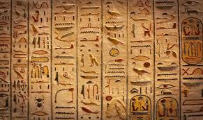
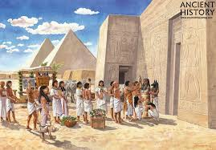
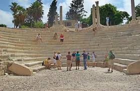
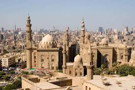
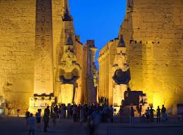

E G Y P T: The Land of Pharaohs, Legacy of Wonders
HISTORY:
An Ancient Royal Land:
A Comprehensive History of Egypt
Ancient Egypt (c. 3100-332 BCE)
Predynastic Period (c. 5500-3100 BCE)
The foundations of Egyptian civilization emerged along the Nile River, where small settlements gradually developed into more complex societies. By around 3500 BCE, two distinct kingdoms had formed: Upper Egypt (the southern region) and Lower Egypt (the northern delta region).Early Dynastic Period (c. 3100-2686 BCE)
Egypt was unified around 3100 BCE by King Narmer (sometimes identified as Menes), marking the beginning of dynastic rule. The early kings established Memphis as their capital and developed the early writing system (hieroglyphics). During this period, administrative systems and religious practices that would define Egyptian civilization for millennia began to take shape.Old Kingdom (c. 2686-2181 BCE)
Often called the "Age of the Pyramids," this era saw the construction of the Great Pyramids at Giza. The pharaohs of the 3rd–6th dynasties, particularly Djoser, Khufu, Khafre, and Menkaure, commissioned massive building projects that demonstrated remarkable architectural and organizational capabilities. The centralized government was led by the pharaoh, considered a living god.First Intermediate Period (c. 2181-2055 BCE)
The Old Kingdom collapsed due to prolonged drought, famine, and political instability. Central authority fragmented as local governors (nomarchs) gained independence, leading to a period of decentralized power and occasional civil conflict.Middle Kingdom (c. 2055-1650 BCE)
Reunification came under the 11th Dynasty ruler Mentuhotep II. The Middle Kingdom represented a cultural renaissance with flourishing literature and art. Pharaohs such as Senusret III expanded Egypt's borders and restored international trade networks. This period is often considered a classical age of Egyptian culture.Second Intermediate Period (c. 1650-1550 BCE)
The central government weakened again, allowing for the rise of the Hyksos, foreign rulers who controlled the northern delta region. Native Egyptian rulers maintained control in the south, based in Thebes.

(: photograph from google images)
New Kingdom (c. 1550-1069 BCE)
After expelling the Hyksos, Egypt entered its most prosperous and powerful phase. The empire expanded to its greatest territorial extent under warrior pharaohs like Thutmose III. This era produced some of Egypt's most famous rulers: - Hatshepsut, a female pharaoh who ruled as king - Akhenaten, who attempted religious revolution by promoting worship of the Aten sun disk - Tutankhamun, the boy king whose tomb was discovered intact in 1922 - Ramesses II (the Great), known for massive building projects and the Battle of Kadesh The New Kingdom saw unprecedented wealth, grand temple construction, and elaborate tomb preparations in the Valley of the Kings.Third Intermediate Period (c. 1069-664 BCE)
Following the New Kingdom, Egypt again fragmented with competing power centers. Libyan and Nubian rulers controlled various regions at different times. The period ended with Assyrian invasions.Late Period (664-332 BCE)
Native pharaonic rule alternated with Persian dominance. Despite foreign invasions, Egyptian culture maintained its distinctive character, though with increased foreign influences. The Late Period ended with the conquest of Egypt by Alexander the Great.

(: photograph from google images)
Greco-Roman Period (332 BCE-642 CE)
Ptolemaic Dynasty (332-30 BCE)
After Alexander's death, his general Ptolemy established a Greek-speaking dynasty that ruled Egypt from Alexandria. The Ptolemies adopted Egyptian religious practices while maintaining Greek administrative systems. The last ruler of this dynasty was Cleopatra VII, whose alliance with Mark Antony ended in defeat by Octavian (later Emperor Augustus) at the Battle of Actium.Roman Egypt (30 BCE-395 CE)
Egypt became a province of the Roman Empire, serving as Rome's breadbasket due to its agricultural productivity. Christianity spread throughout Egypt, challenging traditional religious practices. Alexandria continued as a center of learning and philosophy.Byzantine Period (395-642 CE)
As part of the Eastern Roman (Byzantine) Empire, Egypt became increasingly Christianized. Theological disputes led to the development of Coptic Christianity, which became distinct from the Byzantine Orthodox Church.

(: photograph from google images)
Islamic Egypt (642-1517 CE)
Early Islamic Period (642-969)
Arab armies conquered Egypt in 642, bringing Islam to the region. The new rulers established Fustat (near modern Cairo) as their capital. Egypt was governed by a series of appointed governors under the Umayyad and later Abbasid Caliphates.Fatimid Caliphate (969-1171)
The Shiite Fatimids established an independent caliphate centered in Cairo, which they founded as their capital city. This era saw cultural and commercial flourishing, with Cairo becoming a major center of Islamic learning.Ayyubid Dynasty (1171-1250)
Saladin (Salah ad-Din) overthrew the Fatimids and established Sunni rule, emphasizing religious orthodoxy. He led Muslim forces against the Crusaders and united Egypt with Syria.Mamluk Sultanate (1250-1517)
Originally slave-soldiers of Turkic origin, the Mamluks seized power and established a military oligarchy. Despite their unusual political system, the Mamluks presided over a cultural golden age in Egypt, with magnificent architectural achievements and artistic production. They successfully repelled Mongol invasions but eventually fell to Ottoman forces.

(: photograph from google images)
Ottoman Period (1517-1867)
Egypt became a province of the Ottoman Empire following Sultan Selim I's conquest. While maintaining nominal allegiance to the Ottoman Sultan, local Mamluk leaders often exercised actual power. Ottoman rule was generally distant, focusing primarily on tax collection while allowing local elites considerable autonomy.French Occupation (1798-1801)
Napoleon Bonaparte's expedition to Egypt, though brief, had profound cultural impacts. The campaign brought European scientific interest in ancient Egypt (including the discovery of the Rosetta Stone) and exposed Egypt to modern European military and administrative methods.Muhammad Ali Dynasty (1805-1952)
After the French withdrawal, Muhammad Ali, an Ottoman military commander of Albanian origin, emerged as Egypt's de facto ruler. He modernized the military, education system, and economy, establishing a dynasty that would rule Egypt until 1952. His successors, especially Ismail Pasha, continued modernization efforts but accumulated enormous debt to European powers.British Influence and Occupation (1882-1952)
Growing European influence culminated in British occupation following the 'Urabi revolt in 1882. Though technically still part of the Ottoman Empire (and later a nominal kingdom), Egypt was effectively controlled by British administrators. The Suez Canal, completed in 1869, became a crucial strategic asset for the British Empire. World War I ended Ottoman suzerainty, and Egypt was declared a protectorate. Growing nationalist sentiment led to the 1919 Revolution, resulting in limited independence in 1922 under King Fuad I. However, British troops remained to protect imperial interests, particularly the Suez Canal.Modern Egypt (1952-Present)
Republican Era and Nasser Period (1952-1970)
The Free Officers Movement, led by Gamal Abdel Nasser, overthrew King Farouk in 1952, abolishing the monarchy and establishing a republic. Nasser implemented socialist policies, nationalized the Suez Canal (leading to the 1956 Suez Crisis), and promoted pan-Arab nationalism. Egypt briefly united with Syria as the United Arab Republic (1958–1961).Sadat Era (1970-1981)
Anwar Sadat succeeded Nasser and shifted toward more market-oriented economic policies (Infitah). After the initial success in the 1973 Yom Kippur War against Israel, Sadat pursued peace, culminating in the 1978 Camp David Accords and the 1979 Egypt-Israel Peace Treaty. This controversial decision led to Egypt's isolation in the Arab world and contributed to Sadat's assassination by Islamic extremists in 1981.Mubarak Era (1981-2011)
Hosni Mubarak maintained the peace treaty with Israel and aligned Egypt closely with the United States, receiving substantial military and economic aid. His 30-year rule was characterized by political stability but also corruption, police brutality, and economic inequality.Arab Spring and Recent Events (2011-Present)
The Egyptian Revolution of 2011 forced Mubarak from power. After a tumultuous transition, Mohamed Morsi of the Muslim Brotherhood was elected president in 2012, but was ousted by the military following mass protests in 2013. Former defense minister Abdel Fattah el-Sisi became president in 2014 and has ruled since, emphasizing economic development and security, while facing criticism for authoritarian governance and human rights abuses. In recent years, Egypt has undertaken ambitious infrastructure projects, including Suez Canal expansion and a new administrative capital, while navigating regional challenges including terrorism, water security concerns related to the Grand Ethiopian Renaissance Dam, and the economic impacts of global crises.

(: photograph from google images)